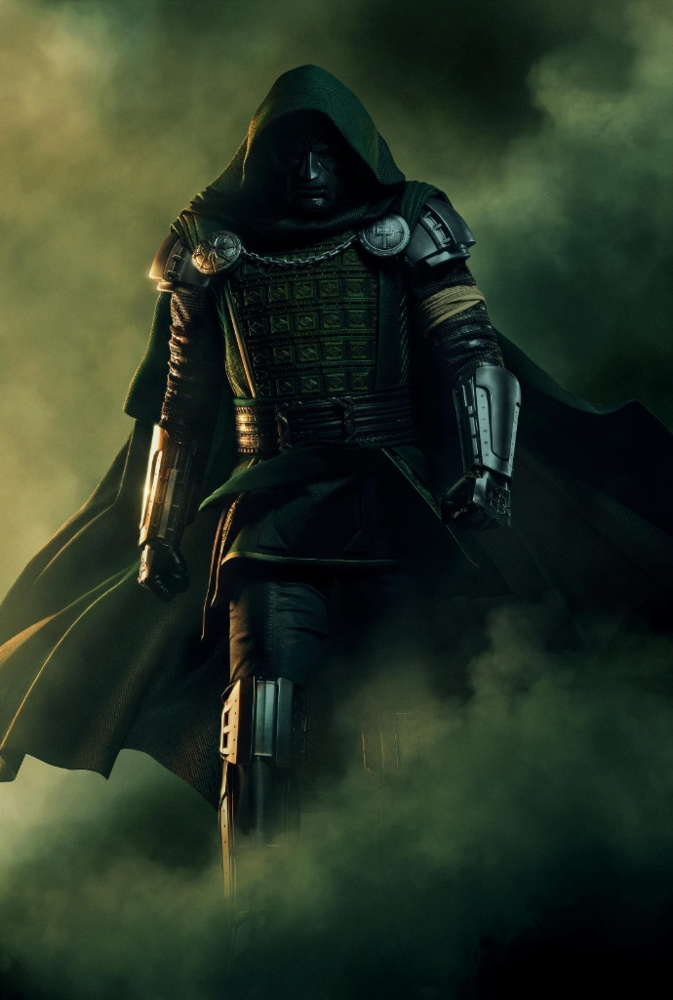

SUSTAINABLE DEVELOPMENT
Engineering climate adaptation, circular wastewater ecosystems, sustainable agriculture, and renewable micro-grids before ecological collapse.

"CONSERVE OR COLLAPSE. THE PLANET ENFORCES BALANCE."
"The earth's reserves are finite. In this hackathon, participants have total freedom to identify any ecological challenge and engineer a working physical or computational prototype that proves humanity can survive."
SUPERVISING FACULTY: Department-Level Faculty Coordinator (PESCE Mandya)
🎯 Open Problem Statement Policy
No fixed problem statements are prescribed. Teams are completely free to identify any critical challenge within Sustainable Development and build their own innovative working solution.
Suggested Focus Domains Explore & Choose Your Problem
Use these overarching focus areas to inspire your project's Round 1 PPT pitch:
Water Security & Clean Purification
Circular wastewater filtration, greywater reclamation, automated desalination, rainwater catchment telemetry, and industrial effluent neutralizing.
Climate Resilience & Urban Infrastructure
Flash-flood mitigation systems, stormwater sensor telemetry, passive cooling structures, permeable pavements, and carbon-sequestering building materials.
Sustainable Agriculture & Zero-Soil Systems
Automated vertical hydroponics/aeroponics, organic pest management, smart soil nutrient monitoring, and drought-resistant precision irrigation.
Renewable Energy & Waste Management
Micro-hydro kinetic turbines, solar-battery charge controllers, automated waste segregators, plastic pyrolyzers, and biogas telemetry systems.